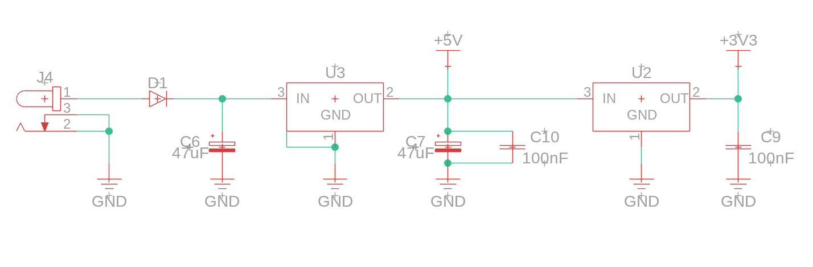

Bill of Materials
The Arduino power circuit begins with the power jack (J4) that can take in anywhere from 7 to 12 volts of power,
with a connection straight to GND. The circuit then continues on until it reaches a rectifier diode (D1)
that is used to prevent possible reverse polarity from a faulty power jack connection from damaging the circuit.
After the diode, the current splits into two paths; one going towards a 47uF capacitor (C6) that connects straight to GND,
and another path going towards a low-dropout regulator (LDO, U3) that regulates the voltage down to 5V. The 5V output voltage
is then split into three different paths, with the first one being sent towards powering other components on the board.
The next path goes down towards another 47uF capacitor (C7) and a 100nF capacitor before it is grounded once more.
The final path goes towards a 3.3V LDO (U2) that regulates the voltage down to 3.3V, which is routed to power components
on the board that require a lower voltage. The 3.3V output also splits into another path that connects to another 100nF
capacitor (C9) before it once again connects to GND.
The purpose of the power circuit is to take in external power and regulate into a 5V and 3.3V output that is then sent out
to power all on the components on and attached to the PCB. The diode protects the circuit from reverse polarity and the
LDO's regulate the voltage down to 5V and 3.3V to supply the recommended voltage to the boardwhile the capacitors
ensure that voltage remains steady throughout without any major fluctuations.

Power Circuit
The Arduino logic circuit starts by reciving a 5V power supply from the power circuit. Following it is a 10k
resistor (R9) whose purpose is to be used to pull the RESET pin on the ATmega328p PU (U1). In order to create a
reset circuit, a 100nF capacitor (C12) is placed between the RESET pin and GND pin. The RESET pin then connects
directly to the ICSP header. Next, the 16MHz crystal oscillator (Y1) is connected to the XTAL1 and XTAL2 pins on
the ATmega328p PU, with two 22pF capacitors (C5 and C4) at each of the GND points. There are 5V powering both the
VCC and AVCC lines of the microcontroller, with a 100nF capacitor (C8) connecting the AVCC line to GND for the purposes
of decoupling. All the present GND connections conenct back to the GND line from the power jack in order to complete the circuit.
The purpose of the logic circuit is to provide the necessary components and connections for the ATmega328p microcontroller
to function properly. The reset circuit allows the microcontroller to be reset when needed, while the crystal oscillator
provides a clock signal for the microcontroller to operate at a specific frequency so that it can execute instructions consistently.
The decoupling capacitor helps to stabilize the power supply to the microcontroller, ensuring that it receives a clean and stable voltage for reliable
operation. Lastly, the pull-up resistor on the RESET pin ensures that the microcontroller does not reset unexpectedly
due to noise or interference, allowing it to function properly in various environments.

Logic Circuit
There are multiple sections that make up the communications circuit on the Arduino Uno. Starting with the top left section,
this section starts with a 5V input that moves to a 1k resistor (R11) and then LED (LD5) that connects to GND. Over to the top
right there is an I/O connector used to connect external components. It contains 18 pins, with pin 16 running through a
100nF capacitor (C11) and then connecting to GND with pin 15. The I/O connector in the bottom right has pins 2 and 5 connected
to a 5V input, pin 4 connected to a 3.3V input and pin 6 and 7 connected to GND. The final section in the bottom left starts
with a 5V input that proceeds to split off into different paths. The first path goes towards a 1k resistor (R6) and then
LED (LD4) that connects to a MOSFET (Q1). The circuit then splits into a a GND connection and a 1M resistor (R10). Another
path splits from the 5V input that contains another 1k resistor (R7) and LED (LD3) which then connects to the LEDRX pin of
the USB to serial converter. Another path containing another resistor (R8) and LED (LD2) connects to the LEDTX pin. The other
USB to serial converter features a connection to GND on pin 13, a 5V connection on pin 11 and pins 9 and 10 connecting to IO1
and IO0 respectively.
The purpose of the communications circuit is to provide the necessary components and connections for the Arduino Uno to
communicate with external components. This done through the use of I/O connectors for adding additional sensors and/or components,
and the USB to serial converter for programming the microcontroller and allowing it to communicate with a computer.
The LEDs in the circuit provide visual feedback for the user, indicating when power is being supplied to the board and
when data is being transmitted or received through the USB to serial converter.
.png)